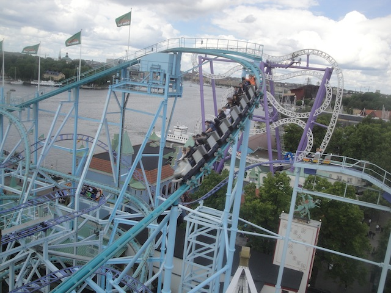
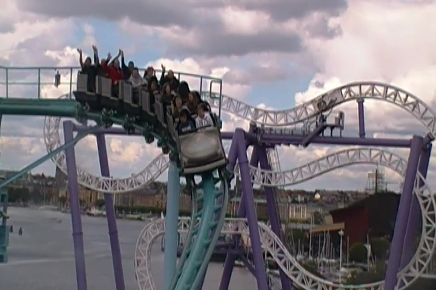
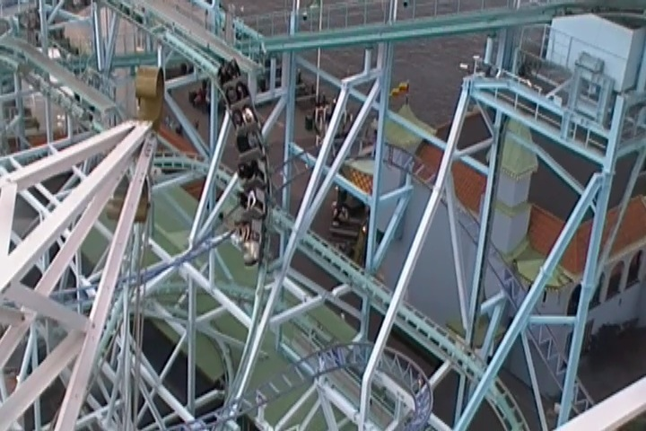
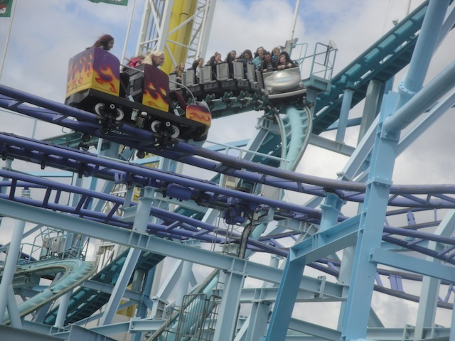
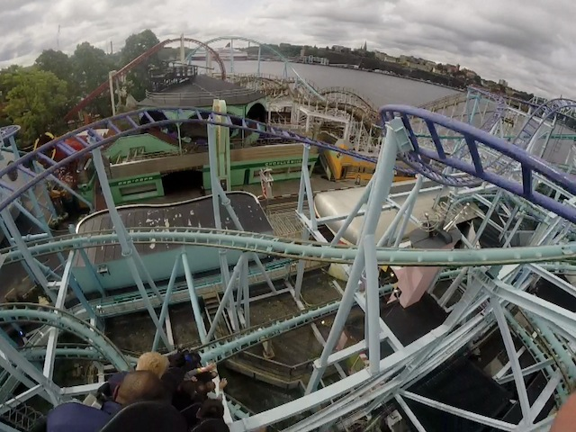
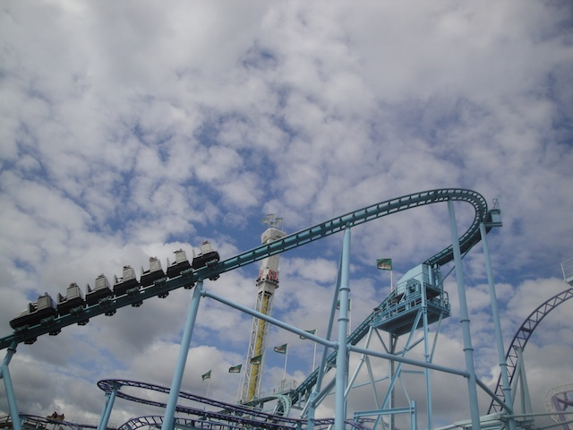
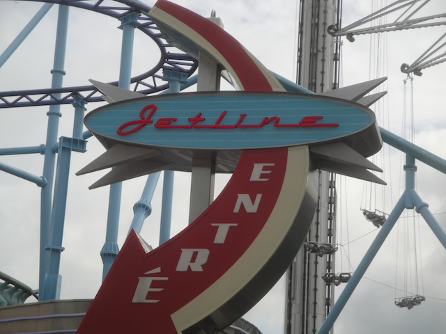
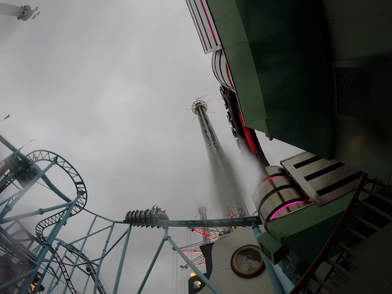

| |

Jetline Review

We're here at Gröna Lund. For today's ride, we'll be traveling back in time to review Jetline. This was the park's Schwarzkoph, and it certainly was an intersting ride. Looking at the ride from a far, it just looked a twisted mess of steel intertwined with a bunch of other coasters at Gröna Lund. And yeah, that's essentially what this ride was in a nutshell. And yeah. This was a fun ride. We hopped in the cars, pulled down the lapbar, and away we went. We rolled out of the station and up the lifthill. However, the lifthill started out curved. That's kind of cool and funky, though considering how tight this park is on space, it was to be expected. Eventually, we turned around, still climbing the lifthill, and getting a great view of Gröna Lund and even a little bit of Stockholm. But soon enough, we reached the top, headed around a turn, and started to drop. Yep. We were now heading down the first drop. Yeah, it wasn't very steep. But honestly, you picked up quite a bit of speed on it. Oh, and a word of caution with keeping your arms up. You did "TAKE THE TUNNEL!!!" at the bottom of this first drop, but it was a very small tunnel. And honestly, I was afraid to have my arms up there. Partially because I'd heard a couple stories of some tall dudes with their arms up, and apparently they claimed that the tips of their fingers grazed the top. Now part of me is very skeptical of this, but I do think that in European parks where they don't have cover-your-ass measures, I'm more likely to believe it. Plus, it did look like a really narrow tunnel. We then blasted out of that tunnel, up another sort of incline, before we headed around a curve. There wasn't a whole lot laterals, but we were just cruising, enjoying all the speed, and blasting over Twister, Kvasten, and by the Baltic Sea. We headed down another incline, rose up, and then went through another turn. There was the rest of the Jetline mess of track. So far, I'd just been seeing more of Twister than Jetline. We then headed into a midcourse brake run. But luckily, that didn't really slow us down that much. It acted more like a trim brake. And then we came into what was without a doubt, the best part of the ride. The spiral drop. Not only was it really steep, but it just bucked you around and dove to the ground. It was seriously up there as one of my favorite drops on any coaster. This without a doubt, took the award for the best drop (On a roller coaster. Not counting drop towers) in Gröna Lund. We then headed up a curved hill, rising up off the ground. We just plowed through some banked straight track before we headed down this sort of downward helix. After that, we winded around another sort of curve up before we headed into another mid course brake. This one sadly seemed stronger than the one before the spiral drop. This time, we headed into a downward helix that just kept going until we got pretty close to the ground before we went through some sort of S thing. We went through some trims, and these were just so we can go through this turn without dealing with some BRUTAL laterals. This lead us into another downward helix before going down through another curvy bit before we got to "TAKE THE TUNNEL!!!!". We glided through a tight curve in there, getting some laterals, until BAM!!!! Into the light and the brake run. So that was Jetline. And while this just looks like a classic fun roller coaster, yeah. That's almost exactly what it was. Nothing too crazy, but just a ton of fun. And not to mention, that spiral drop is great. I'm sad that this ride was gone as it was a ton of fun.
7/10
Location: Gröna Lund
Opened: 1988
Died: June 25, 2023
Built by: Schwarzkopf
Last Ridden: June 24, 2014
Jetline Photos







Home
|